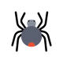

Imp:Spider bites
Diet:Npo
Act:CBR
Cond:not good
Please
1.Iv line ×2
2.CVS q15min
3.Com&pom
4.Cbc, Bun, Cr, Na, K, Alt, Ast, Alk_p, Abg or VBG,Pt,Ptt,Inr,Bs,U/A,BG,RH
5.ECG
6.O2 with mask 8lit/min or intubation
7.Ser n/s 1_2lit stat
8.foly catether fix
9.chart intake &output
10.Amp metocarbamol 1g iv q15min
11.Amp morphine
شرح حال: در گزش عنکبوت بیوه سیاه: علائم شکم حاد جراحی،علایم انفارکتوس میوکارد،انسداد شریانی محیطی ،هیپرتنشن، سردردو سرگیجه ،استفراغ
درگزش عنکبوت قهوهای: عفونت پوست ،واسکولیت،تاول و وزیکول،لنفادنوپاتی،تب،آرترالژی
نکات
1: زخم را با آب و صابون بشورید.
2: از پک یخ در محل گزش استفاده کنید.
3: پروفیلاکسی کزاز تزریق کنید.
4: درصورت درد شدید از مورفین استفاده کنید.
5: اندیکاسیون استفاده از آنتی ونوم:اطفال،افراد مسن،هیپرتنشن ،زنان باردار.
6: 1-2.5سی سی از آنتی ونوم را داخل ۵۰ سیسی دکستروز پنج درصد درسالین ریخته و طی ۱۵ دقیقه تزریق کنید ،فراموش نکنید قبل از تزریق حتما تست جلدی حساسیت انجام دهید.
7: برای کنترل هیپرتنشن ازنیتروپروساید یا هیدرالازین استفاده کنید.
8: تمام بیماران را حداقل ۱۲ ساعت تحت نظر بگیرید و اکثر بیماران نیاز به بستری در بیمارستان دارند.
تشخیص افتراقی:عقرب گزیدگی، مارگزیدگی
1️⃣ گزش با سایر موجودات
2️⃣ سلولیت
3️⃣ آبسه
4️⃣ فولیکولیت
5️⃣ فاشئیت نکروزان
6️⃣ تروما
7️⃣ بدخیمی ( BCC , SCC , Kaposi sarcoma)
8️⃣ آسیب های تماسی ( شیمیایی و ...)
✅سایر تشخیص افتراقی ها بر اساس علائم سیستمیک می باشدمثلا در صورت علائم تنفسی ،آسپیراسیون جسم خارجی ، آسم, COPD و ... مطرح است.